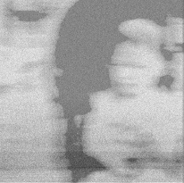
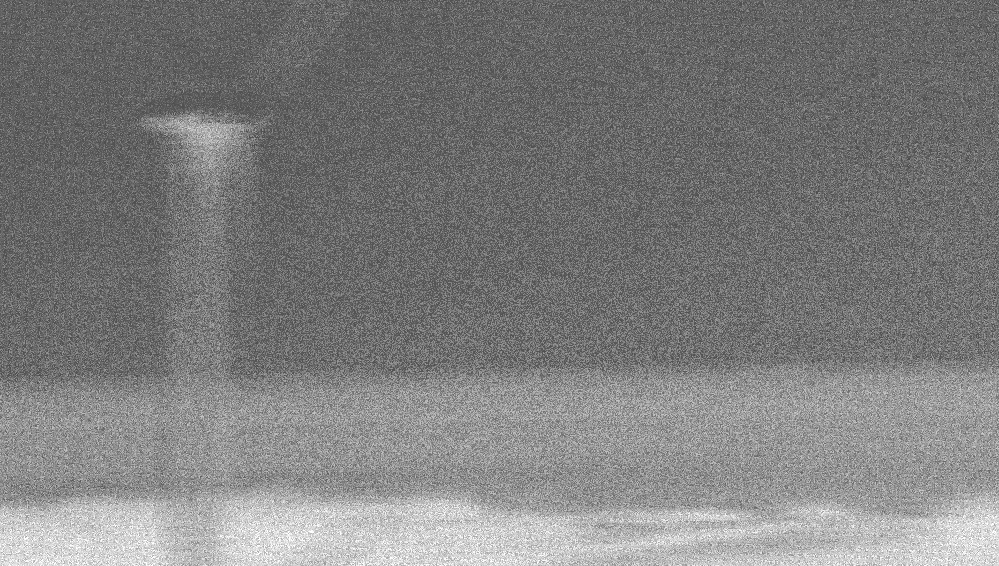

2025 • 3 tracks • 50 min
“21年 獨自一人時 空 無一物 海聲 雨聲 呼吸 剩下我與世界的獨白“

21年 獨自一人時
空 無一物 海聲 雨聲 呼吸 剩下我與世界的獨白
聲音 記得我的所有
21 years when alone null
Nothing Sound of the sea, rain, breathing
Only the monologue between me and the world remains
sound remember everything about me